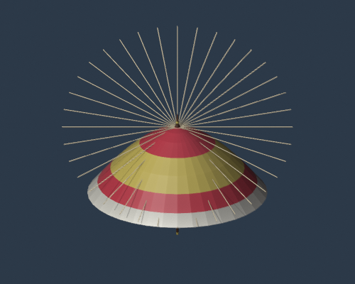
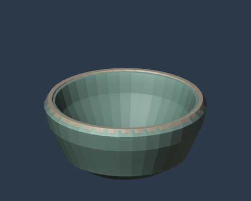
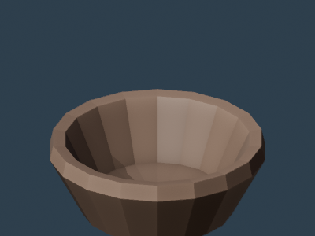
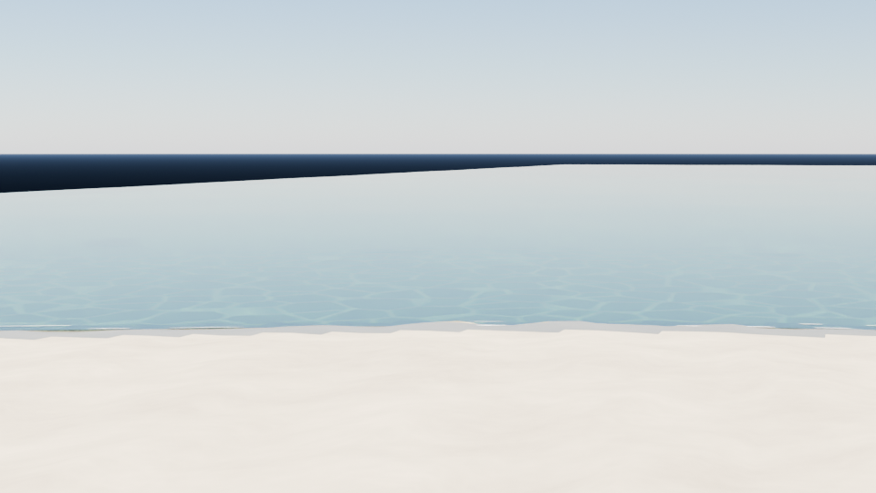

Workbench color study: five Japanese objects
- Blender
- 5.2.2
- Frames
- 144
japanese-festival-flash38-color-5
Blender 5.2 GitHub Actions render gallery — snapshot first, click to play.

japanese-festival-flash38-color-5

Five independent AI-generated procedural Blender modeling scripts subject to automated safety and render gates.
japanese-festival-flash38-test-5

100 standalone modeled Japanese festival and performing arts items. Intricate festival floats, shrine furnishings, theatre masks, musical instruments, dance costumes and regional festival props.
japanese-festival-performing-arts-100

100 independently re-modeled Japanese craft and household miniatures. Hand-built recognizable silhouettes, joinery, layered materials, fine detail, and 6-second Blender 5.2 Workbench orbit previews.
japanese-crafts-rebuilt-100

Traditional craft and household-object assets generated as individual stylized low-poly Blender and GLB files with 6-second Workbench turntables.
japanese-crafts-100
A detailed oxblood-leather Chesterfield wingback armchair with genuine displaced diamond-tufted upholstery, covered buttons, stitched seams, rolled arms, brass nailheads, sculpted wings and carved bun feet. 1280×720 Workbench four-second orbital view.
chesterfield-workbench
↓ Download .blend
An editable procedural three-masted square-rigged ship, lofted wooden hull, six billowing canvas sails, yards, standing rigging, rails and sculpted sea. Five-second 1280×720 Workbench orbital render.
sail-ship-workbench-hd
↓ Download .blend
Editable wooden waterwheel with 16 scooped paddles, 24 radial spokes, 48 rim sections, a central axle, masonry bearings, an elevated flume and sculpted water. Rotates 135 degrees over 48 frames in Blender 5.2.2.
timber-waterwheel
↓ Download .blend

One-frame tropical lagoon study: TMA shallow-water ocean, white sand, depth-colored transmission, reef patches, shoreline foam and wet sand.
tropical-resort-coast-still
↓ Download .blend
1280×720 Blender 5.2 Workbench wireframe render of the bridged Sail ship.blend model. The preview is a real still render; the 1-second MP4 repeats that still for gallery compatibility.
sail-ship-wire-hd
144-frame, 3840×2160 Workbench wireframe preview of Yokohama terrain with vertical exaggeration increasing from 1× to 32×.
yokohama-terrain-workbench-wire-4k
↓ Download .blend
144-frame, 1280×720 Workbench wireframe preview of Yokohama terrain with vertical exaggeration increasing from 1× to 32×.
yokohama-terrain-workbench-wire-hd
↓ Download .blend
144-frame, 320×180 Workbench wireframe preview of Yokohama terrain with vertical exaggeration increasing from 1× to 32×.
yokohama-terrain-workbench-wire
↓ Download .blend
144-frame, 320×180 Workbench render speed test of the Yokohama 1×→32× vertical exaggeration animation.
yokohama-terrain-workbench-speed
↓ Download .blend
320×180, 144-frame Yokohama terrain animation using GSI DEM10B data, with vertical exaggeration increasing exponentially from 1× to 32×.
yokohama-terrain-rise32
↓ Download .blend
320×180 first-pass terrain render of Yokohama using GSI DEM10B PNG elevation tiles (zoom 11), a 96×112 mesh, water plane, and 8× vertical exaggeration.
yokohama-terrain
↓ Download .blend
Blender 5.2.2 / Cycles recreation of the note.com Backrooms workflow: 65m x 15m maze, beveled walls, emissive fluorescent panels plus 80 W area lights, 30 mm camera, noisy carpet, and a low-saturation grade. Wallpaper is procedural rather than copied.
backrooms-note-repro
↓ Download .blend
Blender 5.2 Principled BSDF Thin Wall mode with transmissive zero-thickness panels.
feature52-thin-wall
↓ Download .blend
Blender 5.2 Scene Time node drives an emissive material directly in the shader graph.
feature52-shader-scene-time
↓ Download .blend
Blender 5.2 String to Image compositor node generates a BLENDER 5.2 text overlay.
feature52-compositor-string-to-image
↓ Download .blend
Blender 5.2 Blank Image compositor node supplies a procedural background behind a transparent render.
feature52-compositor-blank-image
↓ Download .blend
Blender 5.2 experimental node-powered Cloth Dynamics / XPBD tearing. A pinned cloth is pulled by gravity and validation requires an actual topology split.
feature52-cloth-tearing
↓ Download .blend
Minimal Blender 5.2.2 headless render used to verify the GitHub Actions runtime, MP4 creation, and output validation.
hello-blender52
↓ Download .blend